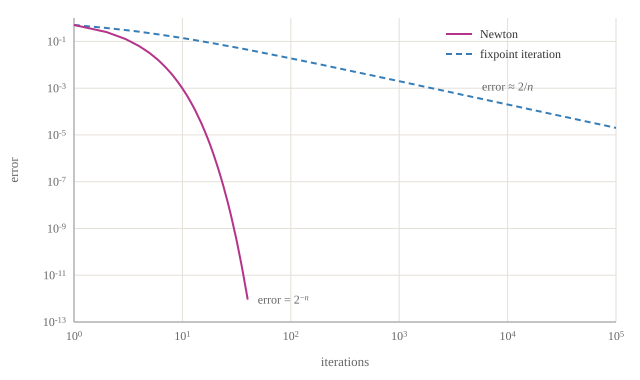
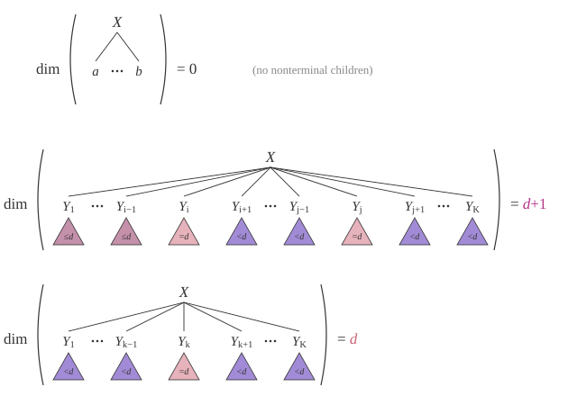
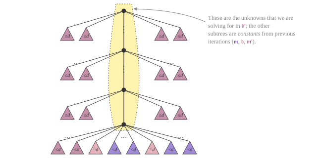

Draft — This article is a work in progress. Content may change.
A weighted context-free grammar $\mathcal{G}$ assigns a semiring value $\sem{X} \in \Values$ to each nonterminal $X$: the total weight of all derivations $\deriv$ rooted at $X$,
$$ \sem{X} = \bigoplus_{\deriv \in \mathcal{D}(X)} w(\deriv), $$
where the weight $w(\deriv)$ of a derivation is the $\otimes$-product of the weights of the rules it uses. When the grammar is recursive, $\mathcal{D}(X)$ is infinite, and $\sem{\cdot}$ is the least solution to the system of fixpoint equations
$$ \sem{X} = \bigoplus_{(X \to Y_1 \cdots Y_K) \in \mathcal{G}} w(X \to Y_1 \cdots Y_K) \otimes \sem{Y_1} \otimes \cdots \otimes \sem{Y_K}, $$
with $\sem{a} = \semione$ for each terminal $a$.
Grammars are algebraic systems
The fixpoint equations of a grammar are an instance of a classical object: an algebraic system of equations over a semiring (Chomsky and Schützenberger, 1963; Esparza et al., 2007; Schlund, 2016). Fix a set of variables $\mathcal{X} = \{X_1, \ldots, X_n\}$. A monomial is a finite product of semiring constants and variables, such as $a \otimes X_1 \otimes X_2$; a polynomial is a finite sum of monomials; and an algebraic system is a system of equations
$$ \boldsymbol{X} = \boldsymbol{f}(\boldsymbol{X}), $$
where each component $f_X$ is a polynomial. The grammar problem and the algebraic problem are essentially the same problem:
| grammar | algebraic system |
|---|---|
| nonterminal $X$ | variable $X$ |
| rule $X \to Y_1 \cdots Y_K$ with weight $w$ | monomial $w \otimes Y_1 \otimes \cdots \otimes Y_K$ in $f_X$ |
| terminal $a$ | constant (its weight; the symbol $a$ itself in the semiring of formal languages) |
| derivation (parse tree) $\deriv$ | a term $w(\deriv)$ in the expansion of the solution |
| total weight $\sem{X}$ of all derivations of $X$ | the $X$ component of the least solution |
Going from grammars to algebraic systems forgets nothing important: each rule becomes a monomial and each nonterminal a variable, and in the other direction, each monomial of a polynomial becomes a rule. Over the semiring of formal languages, the least solution of the system is exactly the language generated by the grammar, which is the observation of Chomsky and Schützenberger. Over other semirings, the least solution is the total value of all derivations.
The fixpoint equations are underspecified: they provide necessary, but not sufficient, conditions for a solution to equal the potentially infinite sum over derivations.
Example. The following grammar encodes the Catalan series: $\sem{X} = c + c^2 + 2\,c^3 + 5\,c^4 + 14\,c^5 + 42\,c^6 + \cdots$.
1: X → X X
c: X → a
Its algebraic system is $X = X \otimes X \oplus c$. Over the real semiring, the system admits two solutions: rearranging gives $X^2 - X + c = 0$, so $X \in \frac{1 \pm \sqrt{1 - 4\,c}}{2}$ by the quadratic formula. Assuming $0 \le c \le \frac{1}{4}$, the smaller solution $\frac{1 - \sqrt{1 - 4\,c}}{2}$ corresponds to the sum over derivations. The larger solution $\frac{1 + \sqrt{1 - 4\,c}}{2}$ is a fixpoint, but it is not equal to the sum over derivations.
The sum over derivations is the least solution. In $\omega$-continuous semirings (where all the infinite sums we need are well-defined), Kleene's fixed-point theorem says that the least solution is the limit of the sequence $\boldsymbol{0}, \boldsymbol{f}(\boldsymbol{0}), \boldsymbol{f}(\boldsymbol{f}(\boldsymbol{0})), \ldots$. Computing that sequence is fixpoint iteration, which initializes every nonterminal to $\semizero$ and repeatedly applies the equations above as an update until it converges. Newton's method, too, is most naturally stated on the algebraic system: it is Newton's method for solving $\boldsymbol{X} = \boldsymbol{f}(\boldsymbol{X})$, retrofitted to semirings. We stay with the grammar view below because it lets us talk about derivations directly.
Proposition. The estimate at time $t$ given by fixpoint iteration equals the total value of all derivations of height $\le t$.
Proof (sketch). We start with every nonterminal at $\semizero$. From there, we build height $\le 1$ derivations from the rules whose right-hand sides contain only terminals. From there, each application of the update combines the values of height $\le t$ derivations by applying the rules of the grammar to derive the values of all height $\le t\!+\!1$ derivations.This is a form of dynamic programming: the estimate at time $t$ is a memo table for a version of the computation, which makes the height $t$ an argument to break cycles. $\square$
Assuming the sum is convergent, fixpoint iteration will diligently compute it (up to each height) until every height has been covered; thus, it converges in the limit to $\sem{\cdot}$. This post describes an accelerated fixpoint iteration variant based on Newton's method for solving equations. It is adapted from chapter 5 of my dissertation, specialized here from Dyna programs to grammars; the code works for any commutative semiring.
Newton's method
Our $\Newton$ method is an accelerated solver for fixpoint problems, based on Esparza et al.'s (2007) generalization of Newton's algorithm for solving fixpoint equations over a semiring. What is interesting about $\Newton$ relative to fixpoint iteration is that it can sum infinitely many derivations in a single iteration. More specifically, each iteration sums the set of derivations by increasing dimension (defined below) rather than by its height as in fixpoint iteration (see the proposition above).In our setting, we use $\Newton$ to sum over semiring-weighted derivations; thus, our presentation will differ from that of Esparza et al. (2007), which takes Newton's method as their starting point. Newton's method for solving a fixpoint equation $\boldsymbol{x} = \boldsymbol{f}(\boldsymbol{x})$ over the reals, where $\boldsymbol{x} \in \mathbb{R}^D$ and $\boldsymbol{f}: \mathbb{R}^D \to \mathbb{R}^D$, is an iterative scheme with the update rule $\boldsymbol{x}^{(t+1)} \gets \boldsymbol{x}^{(t)} + (\boldsymbol{I}-\boldsymbol{J}^{(t)})^{-1} (\boldsymbol{f}(\boldsymbol{x}^{(t)}) - \boldsymbol{x}^{(t)})$, where $\boldsymbol{J}^{(t)}$ is the Jacobian matrix of partial derivatives of $\boldsymbol{f}$ evaluated at $\boldsymbol{x}^{(t)}$. Generalizing to the semiring setting requires retrofitting Newton's method to accommodate semirings that do not have subtraction, division, or differentiation. For our purposes, such retrofitting would be a distraction; we refer the reader to any of the following works, which discuss the connection: Esparza et al. (2007), Reps et al. (2017), Luttenberger (2009). We found the presentation in Schlund (2016) the clearest.
Etessami and Yannakakis (2009) showed that fixpoint iteration could converge exponentially slower than Newton's method.
Example. Consider the following grammar based on Etessami and Yannakakis (2009, Theorem 3.2). This grammar has a single fixpoint $\sem{\mathrm{S}} = 1$.$\frac{1}{2} x^2 - x + \frac{1}{2} = 0$, which, by the quadratic formula ($a\,x^2+b\,x+c=0 \iff x=\frac{-b\pm\sqrt{b^2-4\,a\,c}}{2a}$ with $a \mapsto \frac{1}{2}$, $b \mapsto -1$, $c \mapsto \frac{1}{2}$), has solutions $\{1\}$.
0.5: S → S S
0.5: S → a
Etessami and Yannakakis show that fixpoint iteration is exponentially slower than Newton's method in this example. Specifically, fixpoint iteration requires roughly $2^k$ iterations to gain $k$ bits of precision, whereas Newton's method gains one bit of precision per iteration. The plot below shows this using the code at the end of this post: the error of fixpoint iteration after $n$ iterations is about $2/n$, whereas the error of $\Newton$ after $n$ iterations is $2^{-n}$.

Definition. The dimension $\Dim{\deriv}$ of a derivation $\deriv$ is defined inductively. Suppose $\deriv$ is rooted at a rule $X \to Y_1 \cdots Y_K$, and let $\deriv_1, \ldots, \deriv_m$ be its subderivations for the nonterminal children (terminal children are ignored).
- If $m = 0$: $\Dim{\deriv} \overset{\text{def}}{=} 0$.
- If $m \ge 1$: Let $d = \max(\Dim{\deriv_1}, \ldots, \Dim{\deriv_m})$. If the argmax is unique (i.e., no ties for the max), $\Dim{\deriv} \overset{\text{def}}{=} d$. Otherwise, $\Dim{\deriv} \overset{\text{def}}{=} d+1$.
Please refer to the figure below for an illustration.This is a variant of the Horton–Strahler number of a tree. See Esparza, Luttenberger, and Schlund (2014) for a history of Strahler numbers and their connection to Newton's method.

The dimension of a derivation is always $\le$ its height, but it is often $\ll$. The set of derivations with dimension $d$ can be infinite. In contrast, the set of derivations with fixed height is finite. For example, each derivation in the geometric series grammar (0.5: S → S a, 1: S → b) has dimension $0$. What is remarkable about the set of derivations with dimension $\dPP$ is that there is an efficient linear structure relating it to the sets of derivations with dimensions $\dLE$, $\dEQ$, and $\dLT$. This allows us to grow the set of derivations we have summed over much more quickly using a specialized linear solver (below).
Algorithm 1 $\Newton$: Solve grammar $\mathcal{G}$ by Newton's method
$$ \begin{aligned} &\textbf{def } \Newton(\mathcal{G}): \\ &\quad \langle \Chart, \Change \rangle \gets \NewtonInit(\mathcal{G}) \\ &\quad \textbf{while } \text{true}: \\ &\quad\quad \langle \NextChart, \NextChange \rangle \gets \NewtonStep(\mathcal{G}, \Chart, \Change) \\ &\quad\quad \textbf{if } \NextChart = \Chart: \textbf{break} \\ &\quad\quad \langle \Chart, \Change \rangle \gets \langle \NextChart, \NextChange \rangle \\ &\quad \textbf{return } \Chart \\[8pt] &\textbf{def } \NewtonStep(\mathcal{G}, \Chart, \Change): \\ &\quad \NextChart \gets \Chart \doplus \Change \\ &\quad \NextChange \gets \NewGrammar \\ &\quad \textbf{for } (X \to Y_1 \cdots Y_K) \in \mathcal{G} \text{ with weight } w: \\ &\quad\quad \Comment{\text{Base case: combine at least two derivations with dimension } \dEQ} \\ &\quad\quad \textbf{for } 1 \le i \lt j \le K: \\ &\quad\quad\quad \NextChange[X] \dopluseq w \dotimes \NextChart[Y_{[:i)}] \dotimes \Change[Y_i] \dotimes \Chart[Y_{(i:j)}] \dotimes \Change[Y_j] \dotimes \Chart[Y_{(j:]}] \\ &\quad\quad \Comment{\text{Recursive case: derive } \dPP \text{ derivations by combining}} \\ &\quad\quad \phantom{\triangleright}\ \color{grey}{\text{one } \dPP \text{ derivation with } \dLE \text{ derivations}} \\ &\quad\quad \textbf{for } k \in [1{:}K] \textbf{ where } Y_k \text{ is a nonterminal}: \\ &\quad\quad\quad \NextChange[X] \dopluseq w \dotimes \NextChart[Y_{[:k)}] \dotimes Y_k \dotimes \NextChart[Y_{(k:]}] \\ &\quad \textbf{return } \langle \NextChart, \solveLinear{\NextChange} \rangle \quad \Comment{\text{Solve using the specialized linear solver (below)}} \\[8pt] &\textbf{def } \NewtonInit(\mathcal{G}): \\ &\quad \Comment{\text{Initial set of new derivations}} \\ &\quad \Chart \gets \NewGrammar;\ \NextChange \gets \NewGrammar \\ &\quad \textbf{for } (X \to Y_1 \cdots Y_K) \in \mathcal{G} \text{ with weight } w \\ &\quad\quad\quad \textbf{where } \text{at most } 1 \text{ of } Y_1, \ldots, Y_K \text{ is a nonterminal}: \\ &\quad\quad \NextChange[X] \dopluseq w \dotimes Y_1 \dotimesdots Y_K \\ &\quad \textbf{return } \langle \Chart, \solveLinear{\NextChange} \rangle \quad \Comment{\text{Solve using the specialized linear solver (below)}} \end{aligned} $$
We provide pseudocode for $\Newton$ in Algorithm 1.Our pseudocode follows Schlund (2016, Definition 3.9), which is for context-free grammars. Here, $\Chart[Y_{(i:j)}]$ is shorthand for the product $\Chart[Y_{i+1}] \otimes \cdots \otimes \Chart[Y_{j-1}]$, and $Y_{[:i)}$ and $Y_{(j:]}$ are the children before position $i$ and after position $j$. Terminals have value $\semione$ in $\Chart$ and $\NextChart$ and $\semizero$ in $\Change$. In the recursive case, the nonterminal $Y_k$ is left in the rule as the single unknown, so $\NextChange$ is a linear grammar. The high-level picture of $\Newton$ is much like semi-naive forward chaining: $\Newton$ tracks its analogs of $\Chart$ and $\Change$, except here $\Chart$ is the set of dimension $\dLT$ derivations, and $\Change$ is the set of dimension $\dEQ$ derivations. To efficiently determine the values for all $\dPP$ derivations, $\Newton$ solves a linearized grammar.
We discuss solving the linear subproblems below. Unfortunately, not all subproblems $\NextChange$ can be solved exactly and efficiently for all semirings; important tractable special cases include commutative semirings and cases where the subproblems are either left linear or right linear. Other cases are discussed in the literature (e.g., Esparza et al., 2007; Schlund, 2016; Reps et al., 2017). We note that fixpoint iteration methods are always available for (approximately) solving $\NextChange$; however, fixpoint iteration may not converge quickly (or at all).
As noted in other work on Newton's method (e.g., Schlund, 2016), decomposing the grammar into strongly connected components can speed the algorithm up considerably. (The implementation below does not do this yet.)
We argue for the correctness of $\Newton$ in the following proposition.
Proposition. On iteration $d$ of Algorithm 1, the value of $\Chart$ is the total value of derivations of dimension $\dLT$, and the value of $\Change$ is the total value of derivations of dimension $\dEQ$.
Proof (sketch). We first argue that the value $\NextChange$ returned by the call to $\NewtonStep$ is precisely the sum of dimension $\dPP$ derivations. Below, we illustrate how to build dimension $\dPP$ derivations inductively from the set of dimension $\dEQ$ derivations, the set of dimension $\dLE$ derivations, and the set of $\dLT$ derivations.

We argue that our scheme for creating new derivations generates derivations of dimension $\dPP$. According to the definition of dimension, to create a dimension $\ge d\!+\!1$ derivation, we need to combine at least two $\dEQ$ derivations. That is why the base case of $\NewtonStep$ combines at least two $\dEQ$ derivations; this is depicted as the rule connecting at least two adjacent $\dEQ$ derivations; this step creates a subderivation with dimension equal to ${\cPP d\!+\!1}$. Now, because all subderivations that can combine along the spine (the path up to the root of the derivations) of the new derivation have dimension $\dLE$, the new derivation has dimension $\dPP$; we see this in the recursive case of $\NewtonStep$. Thus, the dimension of the new derivation is precisely dimension $\dPP$. To ensure that the enumeration of $\dPP$ is exhaustive, the grammar $\NextChange$ includes every rule that can combine the $\dLE$ subderivations and the base case of at least two $\dEQ$ subderivations. The grammar $\NextChange$ is a compact encoding of the value of this potentially infinite set of $\dPP$ derivations. Its solution is found by calling a specialized solver (described below) for grammars with linear rules.
In $\NewtonStep$, we see that $\NextChart$ is the sum of $\Chart$ and $\Change$, and then $\NextChart$ overwrites $\Chart$. Thus, at iteration $d$, $\Chart$ is the total value of all derivations with dimension $\dLT$. $\square$
Specialized right-linear solver
This section gives an algorithm that solves the special family of right-linear grammars, such as those generated by Newton's method.All algorithms in this section for the right-linear case work equally well for the left-linear case with straightforward modifications. Unlike fixpoint iteration and Newton's algorithm, this algorithm is exact: it can sum over the infinite set of right-linear derivations in closed form. We can perform inference efficiently because the solution can be expressed in terms of finitely many regular operations. A simple example of a right-linear grammar is
1: X → b
0.5: X → a X
Although this grammar has infinitely many derivations of $X$, we can solve for the total value of $X$ using grade school algebra: $\sem{X} = 1 + 0.5 \cdot \sem{X}$, so $\sem{X} = 2$. Right-linearity can be checked syntactically: each rule has one of two possible forms (1) a right-hand side with only terminals, like the first rule, or (2) a right-hand side whose only nonterminal is its rightmost symbol, like the second rule. A grammar can often be put into a right-linear form using simple grammar transformations. The example below is not (immediately) right-linear.
1: X → b
1: X → X A
0.5: A → a
However, if we unfold the $A$ subgoal in the second rule and exploit the commutativity of multiplication (if permitted by the grammar's semiring) to reorder the right-hand side, then we arrive at the right-linear grammar from before. Unfortunately, not all semirings are commutative; thus, permuting the right-hand side is not allowed. The following example, using the semiring of formal languages, is linear but not right-linear.The solution to this grammar is $\sem{S} = \{ a^n b^n \mid n \in \mathbb{N} \}$, which is not a regular language. Thus, it cannot be expressed as a (finite) expression involving the operations $\otimes$, $\oplus$, and $\kleene{(\cdot)}$.
S → a S b
S → ε
Unlike the previous example, we cannot transform this grammar into a right-linear grammar because its semiring is not commutative. Unfortunately, the right-linear algorithm cannot solve this grammar efficiently; we would need a general linear algorithm.
Algorithm 2 leverages a general-purpose algorithm for solving right-linear recurrences, i.e., equations of the form $\boldsymbol{x} = \boldsymbol{b} \oplus \boldsymbol{A}\, \boldsymbol{x}$ where $\boldsymbol{A} \in \Values^{N \times N}$, $\boldsymbol{b} \in \Values^{N}$. The solution is found by the matrix star operation $\boldsymbol{x} = \kleene{\boldsymbol{A}}\, \boldsymbol{b}$.
Computing the matrix star
Matrices over a semiring form a semiring (Lehmann, 1977): the matrix addition and multiplication operations are a straightforward generalization of the usual ones on $\mathbb{R}$, $[\boldsymbol{A} + \boldsymbol{B}]_{ij} = \boldsymbol{A}_{ij} \oplus \boldsymbol{B}_{ij}$ and $[\boldsymbol{A}\, \boldsymbol{B}]_{ik} = \bigoplus_{j} \boldsymbol{A}_{ij} \otimes \boldsymbol{B}_{jk}$. The star operation $\kleene{\boldsymbol{A}}$ can be computed as follows. If $\boldsymbol{A}$ is $1 \times 1$, then $\kleene{[a]} = [\kleene{a}]$. Otherwise, we can decompose $\boldsymbol{A}$ into nontrivial blocks $\langle \boldsymbol{B}, \boldsymbol{C}, \boldsymbol{D}, \boldsymbol{E} \rangle$ and apply the following blockwise recursion,
$$ \kleene{\begin{bmatrix} \boldsymbol{B} & \boldsymbol{C} \\ \boldsymbol{D} & \boldsymbol{E} \end{bmatrix}} = \begin{bmatrix} \kleene{\boldsymbol{B}} + \kleene{\boldsymbol{B}}\, \boldsymbol{C}\, \kleene{\boldsymbol{\Delta}}\, \boldsymbol{D}\, \kleene{\boldsymbol{B}} & \kleene{\boldsymbol{B}}\, \boldsymbol{C}\, \kleene{\boldsymbol{\Delta}} \\ \kleene{\boldsymbol{\Delta}}\, \boldsymbol{D}\, \kleene{\boldsymbol{B}} & \kleene{\boldsymbol{\Delta}} \end{bmatrix} $$
where $\boldsymbol{\Delta} = \boldsymbol{E} + \boldsymbol{D}\, \kleene{\boldsymbol{B}}\, \boldsymbol{C}$. It is straightforward to verify that each recursive call to $\kleene{(\cdot)}$ is decreasing in size; thus, the recursive definition is well-founded. Furthermore, if the blocks are chosen to be equal in size, then the runtime is $\mathcal{O}(|N|^3)$. (The code below uses Lehmann's equivalent one-pivot-at-a-time version.)
Special cases of this algorithm for specific applications are well-known, e.g.,
- matrix inversion (Gauss–Jordan elimination)Althoen and McLaughlin (1987) provide an interesting historical overview of the Gauss–Jordan elimination algorithm.
- all-pairs shortest path (Floyd, 1962; Warshall, 1962; Roy, 1959)
- finite-state automaton to regular expressions conversion (Kleene, 1956)
- transitive closure (Warshall, 1962)
These problems were unified into what is often called algebraic path problems (Lehmann, 1977; Tarjan, 1981). Unifying these problems was just the (closed) semiring abstraction at work again! A choice of semiring—with the same underlying algorithm that sums over all paths in a graph—solves all the above problems and many others.
A useful perspective on the matrix star operation is that it computes the total weight of paths in a weighted directed graph. Paths may be regarded as a restricted family of right-recursive derivations.That is the interpretation used in Algorithm 2. Similarly, Algorithm 1 uses this interpretation to sum over linearly recursive derivations. Notice, however, that Algorithm 1 requires solutions to be linearly recursive. To use the efficient right-recursive solver, we need the subgoals to be permutable (e.g., a commutative semiring). Suppose the matrix $\boldsymbol{A}$ is the weighted adjacency matrix of a graph. Then $\boldsymbol{A}_{ik}$ is the total weight of all paths of length $=\!1$. Similarly, the total weight of all paths between $i$ and $k$ of length $=\!2$ is $(\boldsymbol{A}\, \boldsymbol{A})_{ik}$. Thus, the star operation on matrices $\kleene{\boldsymbol{A}} \overset{\text{def}}{=} \bigoplus_{i=0}^\infty \boldsymbol{A}^i$ computes the total weight of paths of length $0, 1, \ldots$ and adds them up.
Algorithm 2 $\SolveLinearName$: Solve a right-linear grammar $\mathcal{G}$ by reduction to the matrix star operation
$$ \begin{aligned} &\textbf{def } \solveLinear{\mathcal{G}}: \\ &\quad N \gets \text{the nonterminals of } \mathcal{G} \\ &\quad \boldsymbol{A} \gets \semizero^{N \times N};\ \boldsymbol{b} \gets \semizero^{N} \\ &\quad \Comment{\text{Assemble the matrix } \boldsymbol{A} \text{ and vector } \boldsymbol{b} \text{ for the right-linear solver}} \\ &\quad \textbf{for } (X \to Y_1 \cdots Y_K) \in \mathcal{G} \text{ with weight } w: \\ &\quad\quad \textbf{if } Y_1 \cdots Y_K \text{ are all terminals}: \\ &\quad\quad\quad \boldsymbol{b}_{X} \mathrel{\oplus}= w \\ &\quad\quad \textbf{elif } Y_1 \cdots Y_K = a_1 \cdots a_{K-1}\, Y \text{ where } a_1, \ldots, a_{K-1} \text{ are terminals}: \\ &\quad\quad\quad \boldsymbol{A}_{X, Y} \mathrel{\oplus}= w \\ &\quad\quad \textbf{else}: \\ &\quad\quad\quad \textbf{raise } \text{Error}(\text{“grammar is not right linear”}) \\ &\quad \Comment{\text{Solve the right-linear system with the matrix star operation}} \\ &\quad \boldsymbol{s} \gets \kleene{\boldsymbol{A}}\, \boldsymbol{b} \\ &\quad \Comment{\text{Convert solution vector } \boldsymbol{s} \text{ into a chart in the obvious way}} \\ &\quad \Chart \gets \NewGrammar \\ &\quad \textbf{for } X \in N: \Chart[X] \mathrel{\oplus}= \boldsymbol{s}_X \\ &\quad \textbf{return } \Chart \end{aligned} $$
The matrix star runs in $\mathcal{O}(|N|^3)$ time and can be made to run in $\mathcal{O}(|N|^2)$ space.Sub-cubic algorithms exist when $\Values$ is a ring, e.g., Strassen (1969). The runtime can be improved by decomposition into strongly connected components.The SCC-based algorithms for transitive closure date back to Purdom (1970). Note that there is a speed–accuracy tradeoff when using the right-linear solver. Often fixpoint iteration can reach a tolerable level of accuracy faster than the exact algorithm.The convergence rate of fixpoint iteration depends on the properties of the $\boldsymbol{A}$ matrix. In the case of the real semiring, we can bound the number of iterations to reach a given error tolerance in terms of the spectral radius of $\boldsymbol{A}$.
Code
The implementation takes a grammar from the leftcorner package, which provides a WCFG class, several semirings, and Lehmann's algorithm (cfg._lehmann). The main loop mirrors Algorithm 1:
def _newton(self):
# initial chart is empty, except for terminals
chart = Chart(self.R, {x: self.R.one for x in self.V})
# initialize with dimension-0 derivations
change = linearize(self, chart, chart, chart, init=True)
while True:
next_chart = chart + change.sol
yield (chart, change, next_chart)
change = linearize(self, chart, change.sol, next_chart)
chart = next_chart
The linearization builds the matrix $\boldsymbol{A}$ and vector $\boldsymbol{b}$. The line A[r.head, ys[k]] += ... is where commutativity is used: the constant to the right of the unknown is folded into its coefficient.
def linearize(self, chart, change, next_chart, init=False):
# Matrix and vector for linearized grammar
A = Chart(self.R)
b = Chart(self.R)
# recursive cases
for r in self:
ys = r.body
for k in range(len(ys)):
if self.is_terminal(ys[k]): continue
A[r.head, ys[k]] += (
r.w
* next_chart.product(ys[:k])
* next_chart.product(ys[k+1:])
)
# base cases for initialization
if init:
for r in self:
if all(map(self.is_terminal, r.body)):
b[r.head] += r.w
# base cases for iterates
else:
for r in self:
ys = r.body
for i,j in combinations(range(len(ys)), 2):
b[r.head] += (
r.w *
next_chart.product(ys[:i]) *
change[ys[i]] *
chart.product(ys[i+1:j]) *
change[ys[j]] *
chart.product(ys[j+1:])
)
return Change(self, A, b)
In the code, chart, change, and next_chart are $\Chart$, $\Change$, and $\NextChart$, and Change holds the linearized grammar whose solution is $\NextChange$. During initialization, $\NextChart$ is zero on every nonterminal, so the matrix $\boldsymbol{A}$ only picks up rules with a single nonterminal, which matches $\NewtonInit$. Change.sol computes $\kleene{\boldsymbol{A}} \boldsymbol{b}$.
Using it:
from leftcorner import CFG, Real, MaxTimes
from newton import newton
cfg = CFG.from_string("""
0.5: S → S S
0.5: S → a
""", Real)
newton(cfg) # {'a': 1, 'S': 0.9999999999990905} (39 iterations)
cfg.naive_bottom_up() # fixpoint iteration: needs ~2^k iterations for k bits
The same code runs in any commutative semiring. Here is a small grammar with prepositional-phrase attachment in the max-times (Viterbi) semiring:
cfg = CFG.from_string("""
1.0: S → NP VP
0.4: NP → NP PP
0.6: NP → n
0.7: VP → v NP
0.3: VP → VP PP
1.0: PP → p NP
""", MaxTimes)
newton(cfg) # S: 0.252, NP: 0.6, VP: 0.42, PP: 0.6 (exact after one iteration)
In commutative idempotent semirings like max-times, Newton's method reaches the exact solution after at most $|N|$ iterations (Esparza, Kiefer, and Luttenberger, 2010).
References
- Javier Esparza, Stefan Kiefer, and Michael Luttenberger. An Extension of Newton's Method to ω-Continuous Semirings. DLT 2007.
- Javier Esparza, Stefan Kiefer, and Michael Luttenberger. Newtonian Program Analysis. JACM 2010.
- Kousha Etessami and Mihalis Yannakakis. Recursive Markov Chains, Stochastic Grammars, and Monotone Systems of Nonlinear Equations. JACM 2009.
- Michael Luttenberger. Solving Polynomial Systems on Semirings: A Generalization of Newton's Method. PhD thesis, 2009.
- Maximilian Schlund. Algebraic Systems of Fixpoint Equations over Semirings: Theory and Applications. PhD thesis, 2016.
- Thomas Reps, Emma Turetsky, and Prathmesh Prabhu. Newtonian Program Analysis via Tensor Product. TOPLAS 2017.
- Volker Strassen. Gaussian Elimination is Not Optimal. Numerische Mathematik, 1969.
- Noam Chomsky and Marcel-Paul Schützenberger. The Algebraic Theory of Context-Free Languages. In Computer Programming and Formal Systems, North-Holland, 1963.
- Daniel J. Lehmann. Algebraic Structures for Transitive Closure. Theoretical Computer Science, 1977.
- Robert E. Tarjan. A Unified Approach to Path Problems. JACM 1981.
- Mark-Jan Nederhof and Giorgio Satta. Computing Partition Functions of PCFGs. Research on Language and Computation, 2008.
- Tim Vieira. Automating the Analysis and Improvement of Dynamic Programming Algorithms with Applications to Natural Language Processing. PhD thesis, 2023.